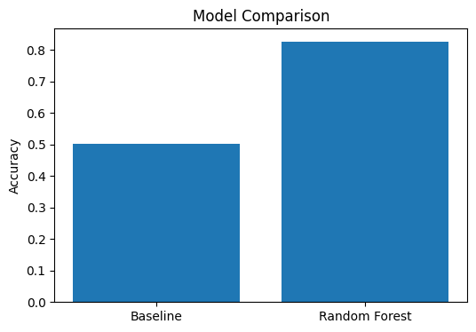

Author: Dilip Kumar
This research explores whether machine learning can identify website content pages that may require refresh or optimization based on historical performance signals. A classification approach was developed using anonymized content performance data. A Random Forest model was compared against a baseline classifier using the same validation split. The model achieved 82.7% accuracy compared with a 50.2% baseline. The resulting system provides ranked recommendations that support content teams in prioritizing pages for review.
Content teams manage thousands of pages and need a systematic way to identify which pages should be reviewed, refreshed, or monitored. This project investigates whether machine learning can provide useful decision-support signals for content prioritization.
Dataset used:
data/raw/content_refresh_anonymized.csv
The dataset contains anonymized content performance records including:
No client identifiers, URLs, or private search queries were used.
A performance score was created from historical engagement metrics. Pages below the median performance score were labeled as potential refresh candidates.
A DummyClassifier using the most frequent class was used as the baseline.
A Random Forest classifier was trained using an 80/20 train-test split.
Metrics directly used to create the target label were excluded from model features to reduce target leakage.
| Model | Accuracy |
|---|---|
| Baseline | 50.2% |
| Random Forest | 82.7% |

The Random Forest model improved accuracy compared with the baseline, showing that historical content signals can provide useful directional information for prioritization.
The model generates an action queue ranking content pages by refresh probability. Higher probability pages should be reviewed first.
The complete notebook, code, and generated artifacts are available in the GitHub repository.
Notebook: work/notebooks/capstone.ipynb
Built on the FlyRank ML Internship dataset.
Data source: https://flyrank.ai